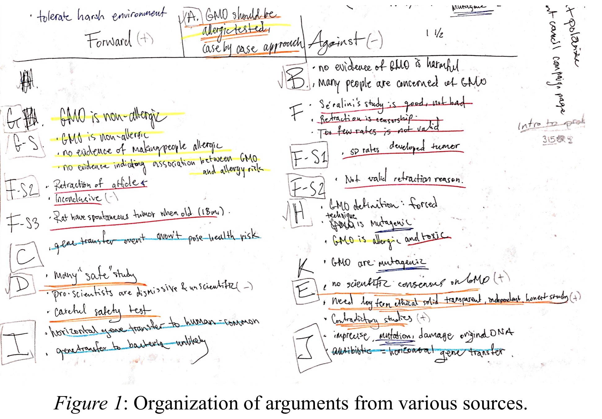

21 Apr. 2018
Reflection
“What a relief,” exclaimed AP Language students who just finished their research essay which they took days to research, draft, revise, and finalize. Although the development of the essay requires a lot of stamina and may be exhausting, many students find themselves having a significant growth on the familiarity of research, including me. During the writing process of the research essay, I developed an efficient way of filtering relevant information and organizing available resources, helping me to maximize my productivity in future research process.
After knowing the broad topic of the research essay, it is crucial to develop a more specific topic that focuses on one concentrated aspect of the broad topic. In order to get sufficient information that is relevant to the topic, I decided to choose the specific topic after browsing a wide variety of sources. To find academic resources that are related to genetically modified organisms (GMO), I utilized Google Scholar, a research paper search engine, that provides a wide variety of sources. I first focused on the titles of available papers which should contain keywords such as GMO. After narrowing down the choices, I briefly examined the abstracts and the conclusions of the articles to identify their focused topics and arguments. I found out that many of the articles that concern about GMO actually focus on GM crops, and more specifically, its toxicity, potential to cause allergy, potential effects of horizontal gene transfer, and regulations. I nailed down the specific topic and the thesis statement of my essay according to those emerged arguments. I stored those studies that highlight important arguments that scientists made about GM crops locally though Sci-Hub, a website that provides free access to various scientific journal articles if the digital object identifier (DOI) of the article is known, to keep track of the sources. In order to find more reliable and relevant sources, I checked the references of the articles stored to identify potential interesting articles by their titles and publishers. Some sources appeared promising, since it directly relates with the topic discussed, I stored those sources and cited them right then using Easybib, a citation website that offers various citation formats.
After finding all sources needed, synthesis of sources posed a challenge to the organization of the essay. In order to organize the essay, I first summarized the important points of each sources and marked down the analysis focus in the annotated bibliography. Then, I briefly jotted down the conclusion of each source on a piece of paper, and categorized them into different color according to its subtopics under the theme of GM crops (Figure 1). After having a detailed classification of arguments, I organized the essay according to those subtopics, and let the source of figure (Source K in the essay) to serve as a transition between synthesis and rhetorical analysis.
Overall, beside the improvement on reading and writing that this research essay brings me, the most important skill that I developed were to identify relevant sources and to organize available sources. Through the research process, I found out that research is not just about the source that one has, neither is it about the amount of sources that one possesses. Research is a chain of thought that ranges from searching the sources, examining the sources, verifying the sources, synthesizing the sources, to applying the sources. The whole research process requires intense care and organization to keep track of the sources and use them appropriately. Thus, this research essay marks the milestone of my research technique as well as my academic writing skills.